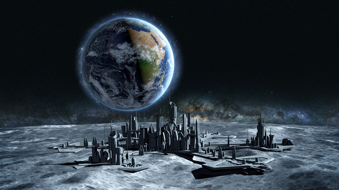

The National Space Society (NSS) and its precursor organization, the L-5 Society, have been promoting Space Settlement since 1975. Our ultimate goal is nothing less than the settlement of space and the use of the vast resources of space for the dramatic betterment of humanity. This goal has been moving toward the mainstream at an accelerating pace. A discussion of recent progress (up until May 2015) can be found in “We Are Winning” (Ad Astra, Fall 2015). Since then the pace has continued to accelerate. Both SpaceX and Blue Origin, using only non-government funds, have returned launch vehicles to Earth for reuse, signaling an imminent reduction in space transportation costs. Space Settlement is the goal of both of these companies. The Space Exploration Development and Settlement Act was introduced in Congress on March 16, 2016. If passed, the SEDS Act would make Space Settlement an official goal of NASA (see “Victory: The Vision of NSS May Soon Become an Official Objective of NASA”). Most recently, Elon Musk, head of SpaceX, announced his company’s plans to send the first human mission to Mars as early as 2024. Musk also announced that he will detail SpaceX’s plans to settle Mars during the International Astronautical Congress in late September 2016. This announcement is likely to cause the goal of Space Settlement to make a major jump toward the mainstream. NSS has been using the term Space Settlement rather than Space Colonization since our beginning in 1975. All of the other organizations in today’s Space Movement were founded after us and almost all followed our lead, using the term Space Settlement. This was done because in 1975 the word colonization had negative connotations. Much of the world was made up of former colonies that resented their former status. However, the rapid move of Space Settlement toward the mainstream in the last few years has shown that society outside of Space Movement circles, and particularly outside of space circles, prefers the term Space Colonization. The recent hit movie The Martian provides an example. NSS considers the two terms Space Settlement and Space Colonization to be synonymous. Despite the 40-plus years of the Space Movement using the term Space Settlement, society may well push us to using the term Space Colonization in the future. The Space Movement began in 1975. Space Colonization is its goal. (For articles about the Movement, see The Space Movement). The advancement of this goal toward the mainstream is energizing the Movement. The greatest obstacle for the Space Movement has been credibility. Time and time again we have convinced influential people of the importance of Space Colonization only to have them become disenchanted after talking to space “experts” who have questioned its credibility. The ongoing destruction of this obstacle is creating an environment favorable to the explosive growth of the Space Movement. Rapid progress toward convincing society as a whole of the importance of Space Colonization to the human future is now possible. NSS can reenergize the belief in the American dream, an ever-improving dramatic betterment of humanity, and a hopeful future for all. 
Why space colonization is important?
SPACE colonization means much more than Antarctic-style research habitats on the moon or other planets for an elite group of astronauts. Space can be colonized and provide Earth with the equivalent of the New World that Columbus "discovered" in the 15th century.
Space colonies can supply clean energy necessary for human survival in the 21st century. In addition, they can provide new homelands and an expanded ecological niche for our species.
For many people, the term "space colony" brings to mind visions of domed cities on the moon or the surface of a hostile planet.
Since September 1974, however, the words have had a very different meaning. That month's issue of Physics Today contained an article by Princeton University professor and nuclear physicist Gerard K. O'Neill entitled, "The Colonization of Space." Dr. O'Neill proposed construction of large-scale habitats built in free space rather than on the surface of planets.
Building the structures in space would allow the inhabitants to select whatever gravity level they desired by controlling the rate of rotation of the habitat. O'Neill showed that even if relatively simple materials such as steel cables were used in colony construction, habitat cylinders of up to 20 miles (32 kilometers) in length and 4 miles (6.4 kilometers) in diameter could be built to house up to 1 million people under comfortable conditions.
Early habitats would be much smaller, with populations of hundreds or thousands. Each habitat would have provisions for agriculture and closed-cycle life support so that once a colony is established, very little outside material would be required to sustain it.
To obtain construction materials for these settlements from Earth would obviously not be economical. Instead, O'Neill proposed using materials already in space.
The first source of raw materials would be the surface of the moon. Thanks to the Apollo missions and the Soviet sample return probes, we know that the required elements are present in abundance.
Because the moon has no atmosphere and only one-sixth Earth's gravity, it is possible to use an electromagnetic catapult (called a mass driver) to launch raw materials to a point in space without incurring the costs of chemical-rocket transport.
Space colonies were the subject of three studies the National Aeronautics and Space Administration conducted in 1975, 1976, and 1977. These projects examined the issues of closed-cycle life support, radiation shielding, habitat design and construction, economics and logistics, and lunar and asteroid mining.
The initial economic reason for the colonization of space would be to use the resources of space to provide for the needs of our home planet. O'Neill proposed that the space colonists use low-cost space resources to construct large solar platforms to collect the sun's energy and convert it into electricity. This electrical power would be transmitted to Earth's surface in the form of a high-frequency radio beam. The beam would be received by a special antenna and rectifier array,
which would convert it ba ck into electricity with an efficiency of about 90 percent.
Solar-power satellites would provide electricity without the air pollution and atmospheric heating caused by burning fossil fuels. The use of space resources would enable these satellites to be built at less than 10 percent of the cost of launching construction materials from Earth. Self-sufficiency of colonies
In addition to the workers and their families, space colonies would contain many of the professions found in any small terrestrial town. Space settlements would also address human needs beyond the physical and economic. By its very nature, each habitat would have a high degree of self-sufficiency and independence.
Solar-power satellites would provide electricity without the air pollution and atmospheric heating caused by burning fossil fuels. The use of space resources would enable these satellites to be built at less than 10 percent of the cost of launching construction materials from Earth. Self-sufficiency of colonies
In addition to the workers and their families, space colonies would contain many of the professions found in any small terrestrial town. Space settlements would also address human needs beyond the physical and economic. By its very nature, each habitat would have a high degree of self-sufficiency and independence.
 Independence in space colonies need not, however, mean isolation. Communications between Earth and space colonies, or from one colony to another, would be a relatively simple matter with thousands of communities within a few light-seconds of each other. Although transport from Earth's surface to a colony or colony group is likely to remain relatively expensive, the cost of travel from one free-space habitat to another can be very small.
Ultimately, space colonies could be built anywhere in the solar system. By increasing the size of the mirrors used to direct sunlight into the living and agricultural sections, it would be possible to support habitats beyond the orbit of Pluto if we so desire. Given the known resources of the asteroids, there is sufficient material to construct habitats capable of supporting populations thousands of times larger than that of Earth.
By increasing our ecological niche to include the solar system, the human species would become much less likely to be destroyed by a single natural or made-man catastrophe.
Since 1977, most of the research on space colonies and related technologies has been carried out by the nonprofit Space Studies Institute (SSI) of Princeton, N.J. SSI conducts research and serves as an information resource to industry, government, and academia.
A space colony has three essential characteristics. First, a colony must have a tightly closed-cycle ecological system capable of replenishing the colonists' air, water, and food with only trace elements required from outside the system. Second, it must have enough radiation-shielding so that indefinite stays are possible. Third, it must provide sufficient artificial gravity to permit the inhabitants to reside on a permanent basis without bone-calcium loss or other harmful effects of prolonged exposure t o microgravity.
In addition to this description of technical characteristics, to be viable the colony would need an economic basis as would any successful town on Earth.
We know quite a lot in general about how to provide radiation-shielding for a space habitat. The secret is to have sufficient mass to stop the high-energy particles collectively known as cosmic rays, as well as radiation from the sun.
At present, space stations such as Skylab, Salyut, and Mir have flown in such low orbits that Earth's magnetic field has provided considerable protection. During the Apollo flights to the moon, it was physically impossible to provide shielding, so the astronauts' exposure to cosmic rays was limited by time. When we have the capability to process lunar soil for construction materials and propellants, we will have slag and other "waste" products that can be used as a radiation barrier. It is also theoretic ally possible to use superconducting magnets to provide an artificial magnetic field. However,
it is unlikely that such a system would be as reliable as a simple physical shield. Life-support systems
Research groups in the United States and the former Soviet Union are advancing the state of the art in Closed Environmental Life Support Systems (CELSS).
For many years, the Soviets were the undisputed leaders in CELSS research, with humans involved in systems experiments in large-scale facilities such as the Bios-3 experimental chamber in Krasnoyarsk, Russia. A privately funded US organization called Space Biospheres Ventures has recently surpassed the scale of the Soviet experiments by constructing a facility in the desert outside Tucson, Ariz. This facility is currently supporting eight people in near-complete material closure for a planned two-year pe riod.
This large facility, called Biosphere II, encloses about three acres and contains several different climate zones, including a tropical rain forest and an intensive agricultural area. These projects and work underway at the Kennedy Space Center, the Disney Epcot Center's Land pavilion, and the Environmental Research Laboratory of the University of Arizona indicate that it will be feasible to sustain relatively complex closed-cycle ecological systems beyond Earth's atmosphere.
Since Isaac Newton, scientists have known how to provide "artificial gravity" by rotation. For purposes of space colony design, however, we still lack the answer to one fundamental question: How much gravity does it take to maintain normal human functions in space?
Independence in space colonies need not, however, mean isolation. Communications between Earth and space colonies, or from one colony to another, would be a relatively simple matter with thousands of communities within a few light-seconds of each other. Although transport from Earth's surface to a colony or colony group is likely to remain relatively expensive, the cost of travel from one free-space habitat to another can be very small.
Ultimately, space colonies could be built anywhere in the solar system. By increasing the size of the mirrors used to direct sunlight into the living and agricultural sections, it would be possible to support habitats beyond the orbit of Pluto if we so desire. Given the known resources of the asteroids, there is sufficient material to construct habitats capable of supporting populations thousands of times larger than that of Earth.
By increasing our ecological niche to include the solar system, the human species would become much less likely to be destroyed by a single natural or made-man catastrophe.
Since 1977, most of the research on space colonies and related technologies has been carried out by the nonprofit Space Studies Institute (SSI) of Princeton, N.J. SSI conducts research and serves as an information resource to industry, government, and academia.
A space colony has three essential characteristics. First, a colony must have a tightly closed-cycle ecological system capable of replenishing the colonists' air, water, and food with only trace elements required from outside the system. Second, it must have enough radiation-shielding so that indefinite stays are possible. Third, it must provide sufficient artificial gravity to permit the inhabitants to reside on a permanent basis without bone-calcium loss or other harmful effects of prolonged exposure t o microgravity.
In addition to this description of technical characteristics, to be viable the colony would need an economic basis as would any successful town on Earth.
We know quite a lot in general about how to provide radiation-shielding for a space habitat. The secret is to have sufficient mass to stop the high-energy particles collectively known as cosmic rays, as well as radiation from the sun.
At present, space stations such as Skylab, Salyut, and Mir have flown in such low orbits that Earth's magnetic field has provided considerable protection. During the Apollo flights to the moon, it was physically impossible to provide shielding, so the astronauts' exposure to cosmic rays was limited by time. When we have the capability to process lunar soil for construction materials and propellants, we will have slag and other "waste" products that can be used as a radiation barrier. It is also theoretic ally possible to use superconducting magnets to provide an artificial magnetic field. However,
it is unlikely that such a system would be as reliable as a simple physical shield. Life-support systems
Research groups in the United States and the former Soviet Union are advancing the state of the art in Closed Environmental Life Support Systems (CELSS).
For many years, the Soviets were the undisputed leaders in CELSS research, with humans involved in systems experiments in large-scale facilities such as the Bios-3 experimental chamber in Krasnoyarsk, Russia. A privately funded US organization called Space Biospheres Ventures has recently surpassed the scale of the Soviet experiments by constructing a facility in the desert outside Tucson, Ariz. This facility is currently supporting eight people in near-complete material closure for a planned two-year pe riod.
This large facility, called Biosphere II, encloses about three acres and contains several different climate zones, including a tropical rain forest and an intensive agricultural area. These projects and work underway at the Kennedy Space Center, the Disney Epcot Center's Land pavilion, and the Environmental Research Laboratory of the University of Arizona indicate that it will be feasible to sustain relatively complex closed-cycle ecological systems beyond Earth's atmosphere.
Since Isaac Newton, scientists have known how to provide "artificial gravity" by rotation. For purposes of space colony design, however, we still lack the answer to one fundamental question: How much gravity does it take to maintain normal human functions in space?
According to many scientists, there is a threshold level of gravity that will trigger normal physiological response. At present, we simply have no data to determine what level of gravity is necessary. In 1986 President Reagan's National Commission on Space recommended that the US develop a variable-gravity research facility that could provide the needed information.
During the NASA space-colony design workshops, participants assumed that Earth-normal gravity would be required in some locations. If, however, one assumes that a human needs only one-sixth of terrestrial gravity, or even less, one could construct small-scale space colonies in the very near future from such raw materials as empty space-shuttle external tanks.
Much progress is being made in technologies essential for the construction of space colonies. For example, prototype mass-driver electromagnetic launchers have been developed at the Massachusetts Institute of Technology and Princeton University. Accelerations have gone from 33 gravities to more than 1,800 gravities. This means that the length of the accelerator on the moon can be reduced from 8,900 meters (about 5 miles) to 160 meters (about 500 feet). Physical- and chemical-processing techniques to obta in propellants and construction materials from lunar soil have been demonstrated at laboratory scale.